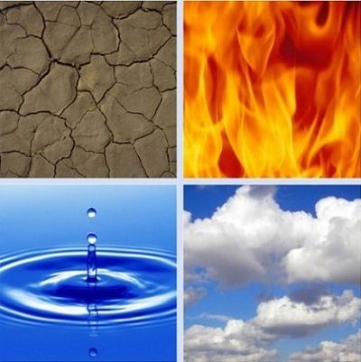

JOTEPOM ECOLOGY
¿QUÉ SON LOS SERES ABIÓTICOS?

El ecosistema es la forma en que los organismo vivos y elementos no vivos del medio ambiente interactúan como una unidad.
Mientras que los factores bióticos estudian los seres vivos, los factores abióticos o físicos en la ecología, se centran en el estudio de los componentes no vivos del medio ambiente que rodean a las especies y que le permiten vivir.
Al determinar la disponibilidad de recursos esenciales como la luz solar, el agua, el oxígeno, materia inorgánica o los minerales, se esclarece qué organismos pueden sobrevivir en un lugar determinado .
Por la dificultad de la temática para entender el concepto de abiótico en el campo de la biología, intentamos siempre añadir un esquema para situarnos dentro de la complejidad que supone estudiar la biodiversidad y los ecosistemas:
Son factores fisicos y no vivos que encontramos en el ecosistema, que afectan a la capacidad de los organismos vivos para sobrevivir y reproducirse. Incluye todo el ambeinte inerte.
El término “abiótico” proviene de las raíces de “a-” que significa “sin”, y “bio” significa “vida”.
ABIOTICOS
AUDIO